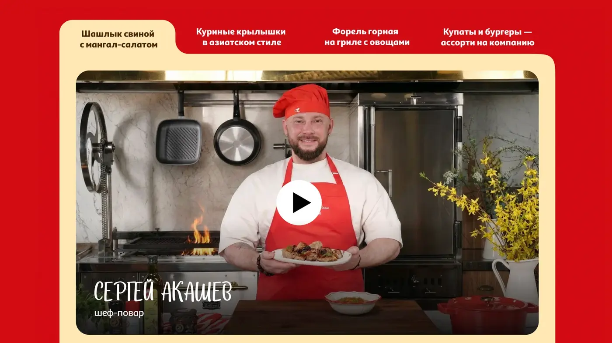
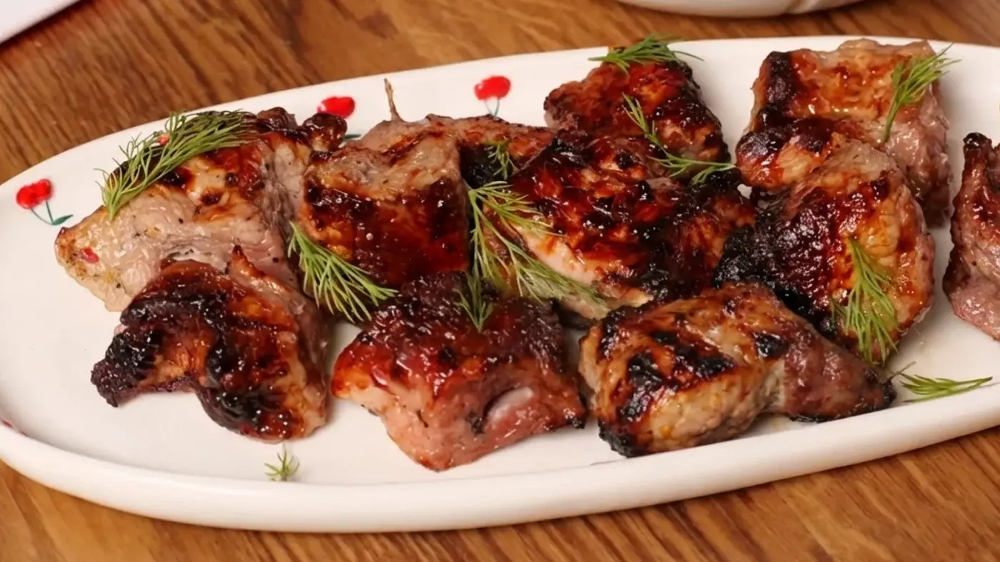
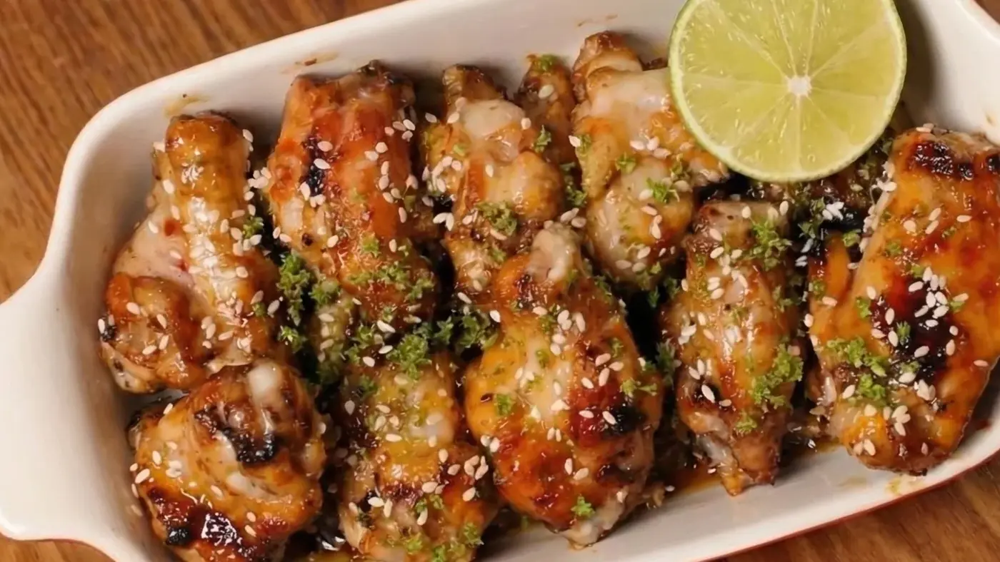
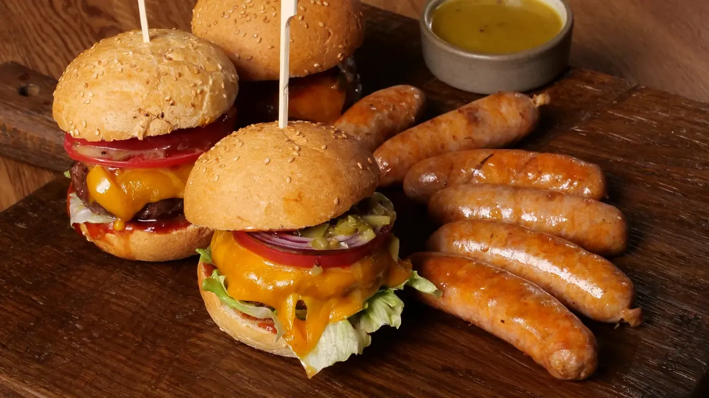
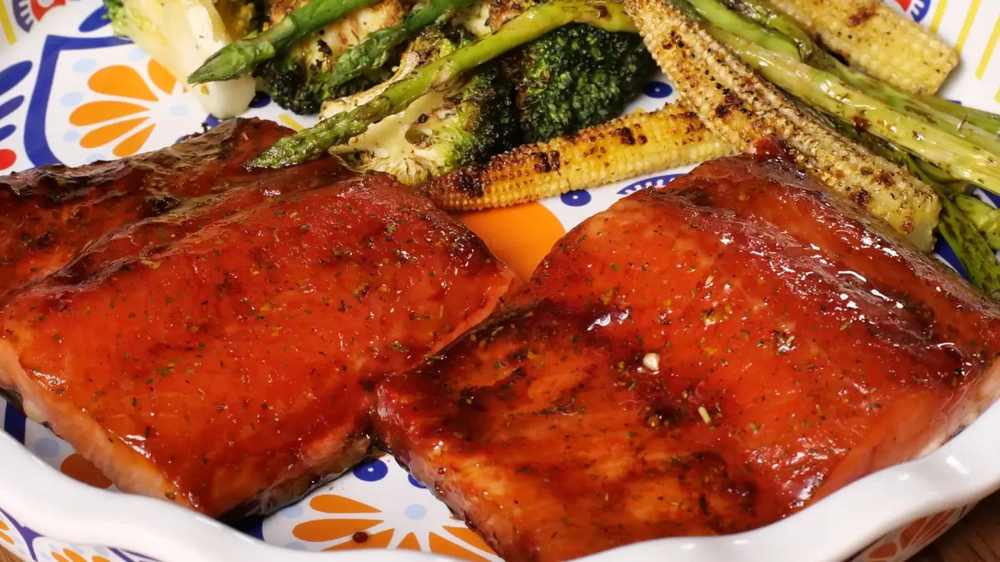

Форель с овощами
Project video
Ашан · Digital special project · Food content
Цифровой спецпроект, который превращает сезон барбекю в понятную контентную систему: рецепты, визуальные инструкции, продуктовые сценарии и видео.
О проекте
Проект помогает пользователю пройти путь от выбора продукта до готового блюда. Визуальная система объединяет рецепты, категории продуктов, инструкции и видео в яркую сезонную коммуникацию.
Арт-дирекшн строится на фирменном красном цвете, аппетитной продуктовой съёмке и простой навигации, которая работает одинаково хорошо в лендинге и видеоконтенте.





Project video
Project video
Project video